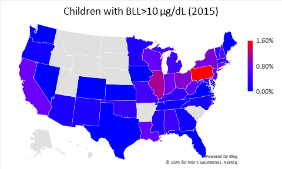

Lead in Drinking Water, Part 1 (Background)
One of my major research projects is building an inexpensive handheld device for measuring the amount of lead in drinking water. This is the first of several planned posts on the project. Today, I’d like to introduce the problem we’re trying to solve and talk particularly about lead in Pittsburgh’s drinking water. Part 2 will talk about some of the ethical and legal issues regarding the lead testing (at least as far as I understand them), and Part 3 will be about the device itself. My intention is to keep this a “living” post, and update it as new information and results develop.
What is Lead?
Let’s start at the very basic level. Lead is a metallic chemical element with an atomic number of 82 and its most common isotope has an atomic mass of 208. From a physics perspective, lead is interesting because it is the heaviest stable element. Lead-208 has a doubly magic nucleus; it and the other stable isotopes of lead form the termination of the nuclear decay chains for almost all of the heavier elements.
From a technological point of view, lead was useful because it is soft and has a low melting point (327 °C). This made it easy to form, which may be why the ancient Romans used it for pipes (“Plumbing” and the chemical symbol Pb derive from the Latin word for lead), and the metal itself was cheap and common, being a waste product of silver refining. In more recent times, it was used as solder to bond copper pipes and wires. Lead is also extremely dense (11 g/cm3), which is why it was used for fishing sinkers, bullets, and ballast. Copper and brass is often alloyed with lead to make it more machineable.
Chemically, lead is a member of the carbon group (Group 14) in the periodic table. Its most common oxidation states are +2 and +4. Lead(II) carbonate and lead(II,IV) oxide were commonly used as pigments (white and red, resp.) until they were banned in the 1970s. Tetraethyllead was used as a gasoline additive until it was phased-out beginning in 1975 and ending in 1995 in the U.S. Lead compounds (particularly lead(II) acetate) have a sweet taste, making them a common food adulterant going back as far as ancient Rome and continuing illicitly today.
Lead is bad
The health effects of lead were suspected as early as the Roman days and began to be taken seriously as early as the late 1800’s. Today the largest concern is the effect of lead exposure to children.

The Centers for Disease Control and Prevention (CDC) rank lead as the most common environmental toxin and the second highest priority among toxic substances, behind arsenic2. Children exposed to lead exhibit long lasting physiological, mental, and behavioral problems such as lower IQ, ADHD3, and lower school performance4. One of the most frustrating aspects about the response to lead exposure in the U.S. is that mandatory remediation of lead in homes is only done after a child or pregnant woman tests positive for elevated blood lead levels (>5μg/dL). In my opinion, this is clearly too late as damage has already been done. This was the case in Flint, MI. The first indication of a problem in the city’s water was when pediatricians noticed a sudden increase in positive blood tests for lead in toddlers.5 Only after this was the water suspected. Testing should be done to help prevent exposure, not diagnose it after it occurs.
Lead poisoning in children is caused almost exclusively by ingestion. Toddlers in particular, will stick anything into their mouths. The most common sources of lead exposure in children are * Lead paint in homes built before 1978 * Lead pipes in homes built before 1950 * Lead in soil, caused by burning of leaded gasoline before 1986 and industrial waste.
While it is believed that lead paint is still the largest contributor to childhood lead poisoning6, several recent, high-profile cases, including the discovery of high lead levels in the domestic water supplies of Washington, DC in 2001 and Flint, MI in 2014, have motivated our effort to rapidly and reliably measure lead concentration in home drinking water. As shown in the 2015 blood test data7 (see figure inset above), Pennsylvania ranks worst among U.S. states in lead exposure. Additionally, several municipalities in Pennsylvania, including the City of Pittsburgh, show elevated lead in domestic drinking water during EPA-mandated periodic testing, above the EPA action limit of 15 parts per billion (ppb) by weight for 10% or more of the homes tested.
Lead is here
Pennsylvania, and Pittsburgh in particular, are at risk for home lead exposure because of the age of the houses. This is demonstrated nicely in the figure below.

Most recently, elevated levels of lead in drinking water were found at home testing sites in Pittsburgh in June 2016 (90th percentile reading of 22 ppb)9 and December 2016 (90th percentile reading of 18 ppb)10. Water leaving treatment facilities shows no detectable level of lead. The major source of lead in drinking water is from downstream plumbing, such as lead service lines and lead solder and fixtures inside homes. An internal audit by the city showed that no record exists of where city-owned lead service lines are located, although preliminary efforts to survey the city for lead services lines have begun11. The leaching of lead into the water supply can be moderated by proper chemical buffering of the water at the treatment plant, but the optimal buffer chemistry has not yet been determined. A voluntary screening program by the city, which gives residents the opportunity to submit their own water samples for testing, showed 12% of the volunteer samples to be above the 15 ppb EPA limit as of February 2017, with the volunteer samples coming disproportionately from higher-income neighborhoods – these results likely underestimate the city-wide average. However, the city has not been able to keep up with the demand to test water samples: only 396 of the 1,076 samples have been analyzed as of February 2017. Of note, the volunteer testing showed no geographic correlation of the measured lead level: houses in the same neighborhood, or even on the same block, showed widely varying lead levels. Therefore, each and every home must be tested individually. This emphasizes the need for low-cost and rapid screening methods and tools, with sufficient reliability and limits of detection. Currently, there is no method that will allow rapid measurements, on site, specific to lead and sensitive down to the EPA mandated action level of 15 ppm. Our work fulfills this need.
What my group is doing about lead
Our interest is to detect a common source of lead in homes: domestic drinking water. We’ve developed a system to do this on-site and in real time with an inexpensive, portable device. I’ll hold off in discussing that, because before we charge in and start testing homes, we have to consider what our desired final outcomes from the testing will be. That’s the discussion for Part 2 of this series.
References
The bulk of the information here came from the Wikipedia page on lead and links therein. Other, more specific or technical references are listed here.
Footnotes
Centers for Disease Control and Prevention. 2017. “CDC’s National Surveillance Data (1997-2015)” https://www.cdc.gov/nceh/lead/data/national.htm↩︎
Agency for Toxic Substances and Disease Registry. 2015. “The Priority List of Hazardous Substances That Will Be the Candidates for Toxicological Profiles.” https://www.atsdr.cdc.gov/SPL/index.html↩︎
Etzel, R. A., and S. J. Balk, eds. 2003. Pediatric Environmental Health. 2nd ed. Elk Grove Village: American Academy of Pediatrics.↩︎
Evens, Anne, Daniel Hryhorczuk, Bruce P. Lanphear, Kristin M. Rankin, Dan A. Lewis, Linda Forst, and Deborah Rosenberg. 2015. “The Impact of Low-Level Lead Toxicity on School Performance among Children in the Chicago Public Schools: A Population-Based Retrospective Cohort Study.” Environmental Health: A Global Access Science Source 14 (April): 21. doi:10.1186/s12940-015-0008-9.↩︎
Hanna-Attisha, Mona; LaChance, Jenny; Sadler, Richard Casey; Champney Schnepp, Allison. 2015. “Elevated Blood Lead Levels in Children Associated With the Flint Drinking Water Crisis: A Spatial Analysis of Risk and Public Health Response”. American Journal of Public Health. 106 (2): 283–290. doi:10.2105/AJPH.2015.303003.↩︎
Centers for Disease Control and Prevention. 2005. Preventing Lead Poisoning in Young Children. Atlanta: CDC. Link to PDF.↩︎
Centers for Disease Control and Prevention. 2017. “CDC’s National Surveillance Data (1997-2015)” https://www.cdc.gov/nceh/lead/data/national.htm↩︎
Pennsylvania Department of Health. 2014. 2014 Childhood Lead Surveillence Annual Report. [Deadlink]. ↩︎
Lamb, Michael. 2017. “Performance Audit: Pittsburgh Water and Sewer Authority.” City of Pittsburgh. Link to PDF.↩︎
“PWSA Releases December 2016 Lead Compliance Test Results.” 2017. Pittsburgh Water and Sewer Authority. January 19, 2017. [Deadlink]. ↩︎
Lamb, Michael. 2017. “Performance Audit: Pittsburgh Water and Sewer Authority.” City of Pittsburgh. Link to PDF.↩︎